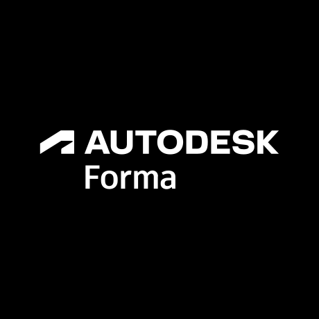

3D Structural Modeling
High-LOD Revit structural modeling. We specialize in converting 2D structural plans into intelligent, parameter-rich 3D BIM models ready for fabrication and analysis.
Corporate services
Beyond our educational masterclasses, Spatial Vision Tech provides industry-leading structural modeling, coordination, and drafting services for the AEC industry.
High-LOD Revit structural modeling. We specialize in converting 2D structural plans into intelligent, parameter-rich 3D BIM models ready for fabrication and analysis.
Navisworks-driven coordination to identify and resolve MEP, Architectural, and Structural clashes in the pre-construction phase, saving project time and costs.
Precision AutoCAD drafting services. We generate detailed structural working drawings, standard details, rebar schedules, and shop drawings adhering to global standards.
Utilizing Autodesk Forma and advanced conceptual tools to analyze site constraints, optimize designs, and deliver robust early-stage planning models.
We utilize industry-standard Autodesk tools to deliver reliable project data.

FormaContact our team to discuss project requirements, obtain a quote, or schedule a consultation.